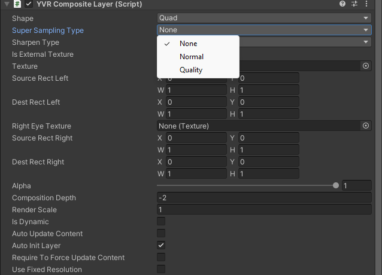

Supersampling and Sharpening
To improve image quality, you could enable supersampling or sharpening. This solves the issues like flickering and moiré when downsampling, which further improves the image quality. Sharpening increases the image clarity and improves the blurring of image during upsampling.
Enable Supersampling Feature
Use Compositor Layer to select supersampling type:
- Under Compositor Layer settings,

select Super Sampling Type: - None - Normal - Quality
Enable Sharpening Feature
Use YVR Manager or Compositor Layer to select sharpen type:
- Under YVR Manager settings,

select Sharpen Type: - None - Normal - Quality
Note
- When using sharpening, please enable multi-layer mipmap for the requested swapchain and generate texture data for each of its mipmap layers before committing.
- In OpenXR, all settings are recommended only and the compositor can enable or disable them as needed.
- Compositing layer filtering requires more GPU resources. This is especially true for sharpening and supersampling algorithms, where you should weigh the increased visual fidelity against the additional GPU resources needed to provide the best VR user experience.
Example
View the sample project for your reference.
Open a new project or current project.
Import the latest SDK.
Under Project panel, select Pacakages > YVR Core > Scenes > CompositeLayer.
Under CompositeLayer folder, select CompositeLayerSuperSamplingSharpen.unity to open the scene.
Go to File > Build Settings..., select Add Open Scenes.
Select Build and name the file.
Install the exported APK fie.